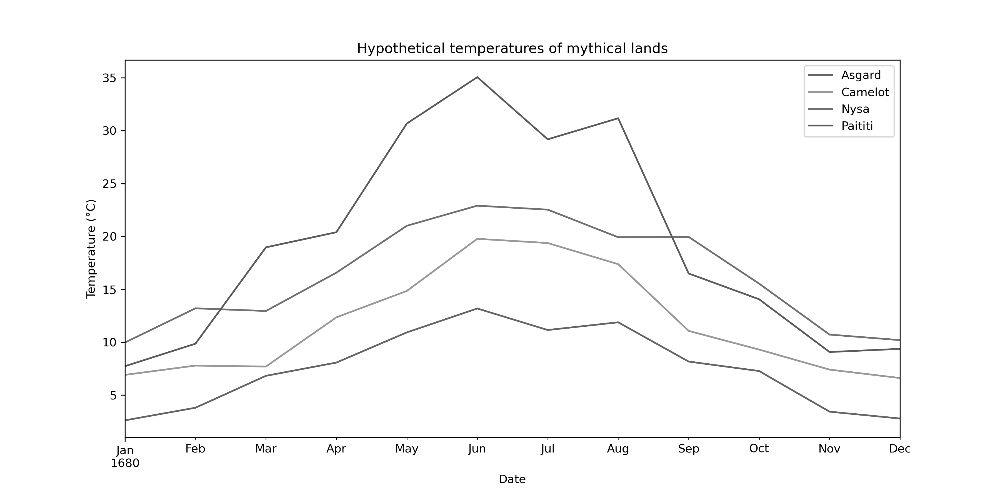

Effective plot design: line plots#
As we have seen earlier in this chapter, you should be aiming to produce plots that include all of the elements that help make understanding the plotted data intuitive. Typically, this might include:
Axis labels, including units if needed
A legend
Grid lines
Plot and/or figure titles
Annotation on the plot, such as text
In addition, there are several factors that can help improve the communication of the plotted information. When plotting line data, for example, the color of the lines might be an important consideration to tell different lines apart. This is especially true when plotting several lines on the same axes, as readers will need to be able to differentiate the lines and know which line refers to a given set of data. But there is more to plotting lines than simply choosing nice colors.
Not all people viewing your plots will see them the same way. Some viewers may have color blindness, while others may have printed out a copy of your plot in grayscale from a printer. Thus, while choosing nice colors can help make your plots look visually pleasing to you, it is worthwhile to consider the other viewers or formats in which your plots may be viewed. In this way your visualizations can be as inclusive to different viewers as possible.
Let’s consider an illustrative example. In this case we will use four lines to plot hypothetical monthly temperatures for various mythical lands in the year 1680 [1]. We will use a pandas DataFrame called data for this purpose with four columns and one year of data. We can see temperatures for the first four months in the data table below by typing data.head(4).
Show code cell content
# Load the libraries we need
import matplotlib.pyplot as plt
import pandas as pd
dates = pd.date_range(start="16800101", end="16801201", freq="MS")
temperatures = {
"Asgard": [3, 4, 7, 8, 11, 13, 11, 12, 8, 7, 3, 2],
"Camelot": [7, 8, 8, 12, 15, 19, 19, 17, 11, 9, 7, 6],
"Nysa": [10, 13, 13, 17, 21, 23, 22, 20, 19, 16, 11, 10],
"Paititi": [8, 10, 18, 20, 31, 35, 29, 31, 17, 14, 9, 9],
}
data = pd.DataFrame(index=dates, data=temperatures)
data.head(4)
| Asgard | Camelot | Nysa | Paititi | |
|---|---|---|---|---|
| 1680-01-01 | 3 | 7 | 10 | 8 |
| 1680-02-01 | 4 | 8 | 13 | 10 |
| 1680-03-01 | 7 | 8 | 13 | 18 |
| 1680-04-01 | 8 | 12 | 17 | 20 |
Using this data we can create a plot (Figure 4.16) to visualize the temperatures for the four mythical lands using the pandas .plot() function.
ax = data.plot(
xlabel="Date",
ylabel="Temperature (°C)",
figsize=(12, 6),
title="Hypothetical temperatures of mythical lands",
)
Figure 4.16. Hypothetical temperatures for one year in different mythical lands.
In Figure 4.16, we can see a visualization of the contents of the data DataFrame and many people will be able to distinguish the lines using the four colors that have been selected. However, not all people may see the figure in the same way, and those who have printed a copy in grayscale will see things quite differently.

Figure 4.17. Hypothetical mythical land temperatures in grayscale.
In Figure 4.17, we see that it is nearly impossible to tell which line is which in the plot, so color alone is not helping in distinguishing the lines on this plot. In this case a better option is to vary both the color and line pattern for each line so they can be distinguished easily irrespective of the line colors and how they may be seen. This can be done using the style parameter in the .plot() function, as shown below.
ax = data.plot(
style=["-", ":", "--", "-."],
xlabel="Date",
ylabel="Temperature (°C)",
figsize=(12, 6),
title="Hypothetical temperatures of mythical lands",
);
Figure 4.18. Hypothetical mythical land temperatures with different line styles.
Here in Figure 4.18, viewers can easily tell which line is which whether they have colorblindness or have printed a figure from a printer in grayscale. The difference, of course, is that this figure uses four different line styles: - for a solid line, : for a dotted line, -- for a dashed line, and -. for a line with dots and dashes. These are defined using shorthand plot formatting for matplotlib [2], for which they are the only four available line styles. If your plots require more than four line styles, you will likely need to use matplotlib rather than pandas for the plotting. In that case, you can find more about the line styles for matplotlib plotting in the matplotlib documentation online [3].
Although this plotting example may seem like a simple tip, it can make a great difference in ensuring all viewers see the same data effectively the same way. We will return to the topic of effective plot design to discuss selecting colors and other visualization tips in greater detail in Chapter 8.